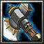

上杉家臣 上杉家侍大將，幼名武王丸，信濃之豪族，也是城主，曾經擊退武田信玄兩批大軍，也是名將上杉謙信做不到的事，勇名轟動鄰國。
力量型近戰英雄
法術 ：Ｂ 輔助 ：Ａ 最擅長破塔，一對多人 力量：33+2.90（主要） 敏捷：30+2.10 智慧：23+2.00 Ｄ[主動] 武王丸 增加40點攻擊力，30%攻擊速度， 持續30秒。 
Ｗ[主動] 動地斧 猛擊地面，對附近400範圍的敵方地面部隊造成[150/250/350/450]點傷害， 並 將他們震昏[1/1.5/2/2.5]秒。 消耗法力[100/120/140/160]，等待時間15秒。 Ｅ[主動] 震地斧 敲擊地面，對附近400範圍的敵軍造成[90/180/270/360]傷害， 並減緩[20/30/40/50]%攻擊速度及移動速度，持續4秒。 消耗法力[100/120/140/160]，等待時間13秒。 Ｒ[被動] 士氣提昇 增加900範圍內的友軍[5/10/15/25]% 攻擊力。 Ｔ[主動] 大地震撼 在範圍700內每[0.1/0.08]秒打出一波動地跺，每波會波擊範圍335內所有敵人45點損傷，並擊暈0.2秒。 需持續施法，最多可持續[65/94]波。並且獲得大地之力而增加力量[25/35]點持續100秒。 消耗法力[250/300]，等待時間110秒。 |